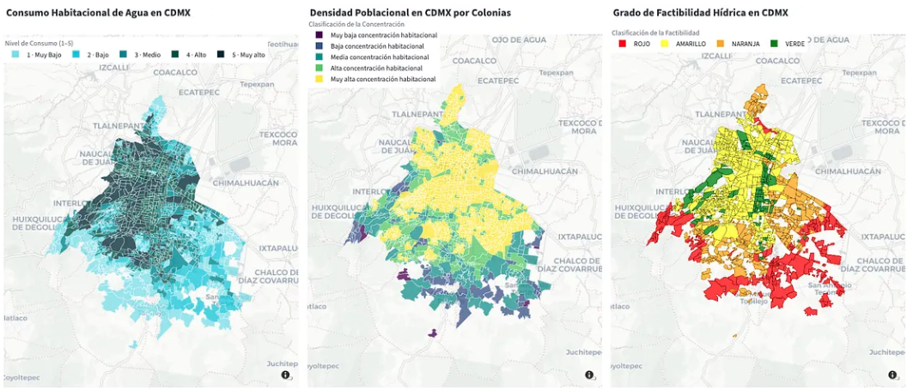

Thoughts, tutorials, and things I've been learning about.
I switched to taking notes in Notion to writing down in both my iPad and a white paper all my toughts, ideas and study notes in order to achieve and enhancement of my focus and retention when it came to studying for an exam. Take a look at my most recent post in Medium and discover in a 4 minute reading why handwriting can be the future of learning in the advent of the AI era.
Water is a non-renewable resource that is essential for life. It is used for drinking, cooking, bathing, and many other purposes. However, water is getting scarce and not very accessibale for all the population. This analysis presents the water supply landscape in Mexico City . It finishes exploring the relationship between water availability and property value .
